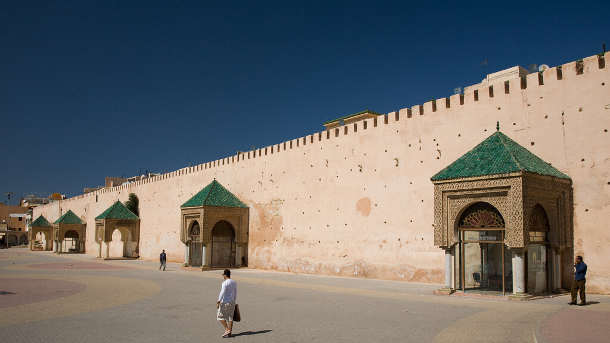
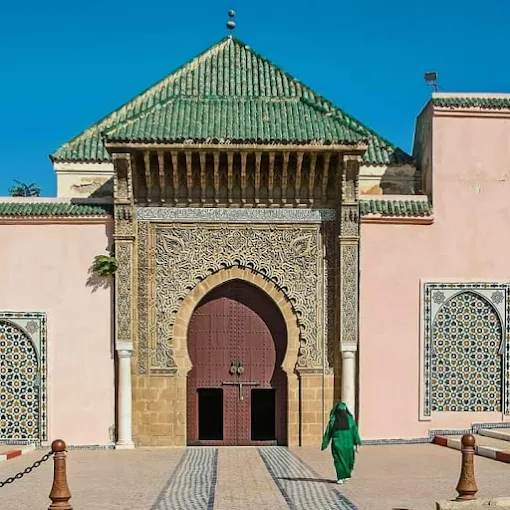
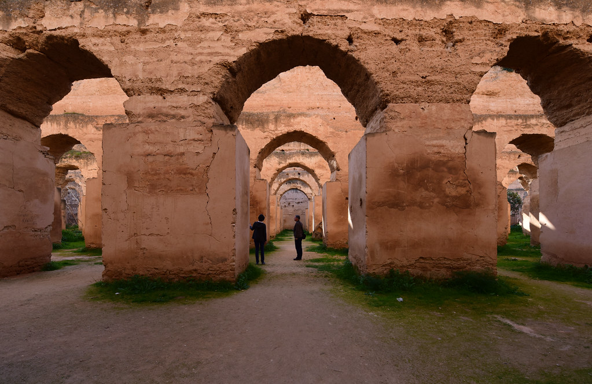
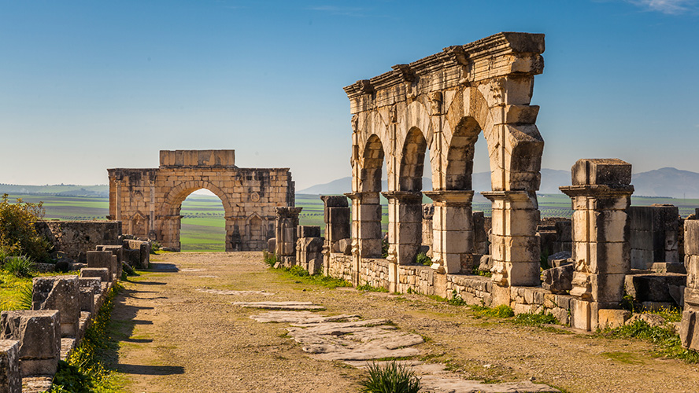

À propos de Meknès
Ville impériale fondée par Moulay Ismaïl, Meknès est célèbre pour ses remparts monumentaux, ses portes majestueuses et son architecture authentique. Située au cœur du Maroc, elle possède un mélange unique d’histoire, de tradition et de modernité.
Faits rapides
- Population : ~650k
- Région : Fès-Meknès
- Fondation : XIᵉ siècle
- Surnom : Ville Impériale
Culture
Meknès reflète l’héritage de Moulay Ismaïl, avec ses palais, écuries royales et fortifications uniques. Elle est aussi connue pour son artisanat, sa musique andalouse et son rôle historique dans l’empire alaouite.
La ville est proche du site romain de Volubilis, une richesse archéologique incontournable.
Patrimoine
Sites impériaux, portes monumentales.
Musique
Andalouse, Melhoun.
Artisanat
Bois, zellige, fer forgé.
Gastronomie
Pastilla, Tfaya, plats traditionnels.
Sites incontournables

Bab Mansour
L’une des portes les plus impressionnantes du Maroc, construite sous Moulay Ismaïl.

Place Lahdim
Grande place animée, cœur de la médina de Meknès.

Mausolée Moulay Ismaïl
Lieu sacré et chef-d’œuvre de l’architecture alaouite.

Heri Es-Souani
Anciennes greniers royaux et écuries monumentales.

Volubilis
Site romain classé UNESCO, situé à 30 minutes de Meknès.